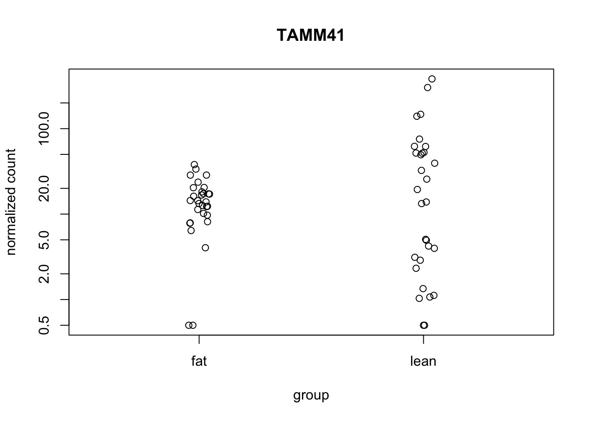
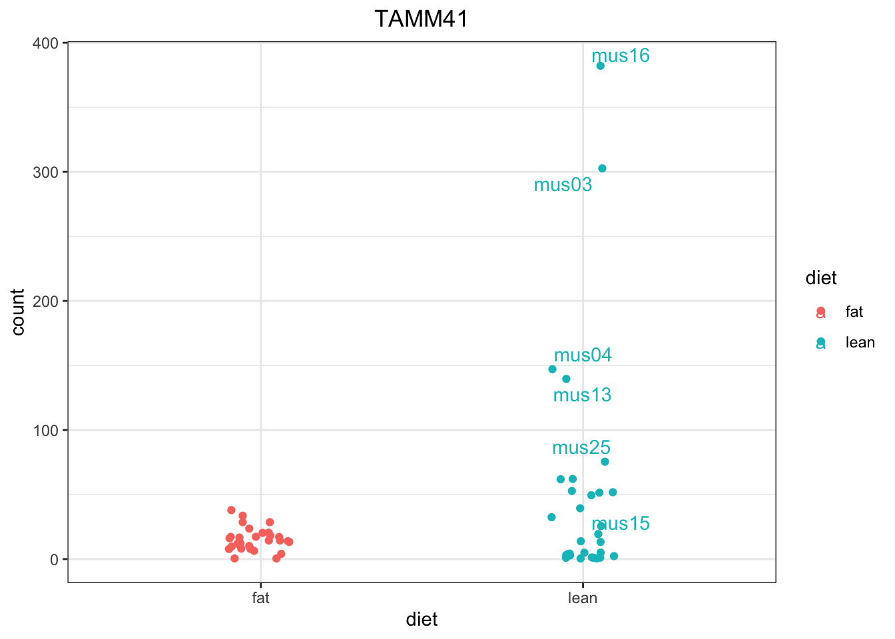

# Load required packages
library(here)
library(tidyverse)
library(readxl)
library(edgeR)
library(limma)
library(DESeq2)
# Create list to save the analysis objects
de_edger <- list()
de_deseq <- list()
# Load gene counts data and sample metadata
counts <- read_xlsx(here("data/diet_mice_counts.xlsx"), col_names = TRUE, sheet = 1)
metadata <- read.table(file=here("data/diet_mice_metadata.txt"),
header = TRUE,
sep = "\t", dec = ".",
stringsAsFactors = TRUE)Day3
Transcriptomics data analysis | Lesson 3
Learning Objectives
1. Identify the R commands needed to run a complete differential expression analysis using edgeR and DESeq2.
2. Visualize the results.
3. Apply these commands to your data.
Summary of differential expression analysis workflow
- Load packages and data
- Check if the data and metadata sample ids match
### Ensure the sample metadata matches the identity and order of the columns in the expression data
# Order the sample ids from the metadata (smaller file) by the colnames from the counts
if (setequal(colnames(counts)[-c(1, 2)], metadata$sample_id)) {
metadata <- metadata[match(colnames(counts)[-c(1, 2)], metadata$sample_id),]
} else {
stop("Error: The set of sample ids is not equal in both datasets.")
}- Remove NAs, if present
# Transform count data-frame to matrix with row names
# and remove NAs (if they exist)
counts_matrix <- counts[-1] %>%
na.omit() %>%
column_to_rownames(var = "gene_symbol") %>%
as.matrix()- edgeR analysis
Create design and contrast matrices | Modelling Diet and Gender
# Design matrix using the model for categorical variables diet and gender
design_diet <- model.matrix( ~ 0 + diet + gender, data = metadata)
#design_diet <- model.matrix( ~ 0 + diet, data = metadata)
# Contrasts matrix: Differences between diets
contrasts_diet <- limma::makeContrasts(
(dietfat - dietlean),
levels=colnames(design_diet)
)# Create a list
# Create a DGEList object
de_edger$dge_data <- DGEList(counts = counts_matrix)
# Filter low-expression genes
de_edger$keep <- filterByExpr(de_edger$dge_data,
design = design_diet)
de_edger$dge_data_filtered <- de_edger$dge_data[de_edger$keep, ,
keep.lib.sizes=FALSE]
# Perform Library Size Normalization | Slow step
de_edger$dge_data_filtered <- calcNormFactors(de_edger$dge_data_filtered)
# Estimate dispersions | Slow step
de_edger$dge_data_filtered <- estimateDisp(de_edger$dge_data_filtered,
design = design_diet)
### To perform likelihood ratio tests
# Fit the negative binomial generalized log-linear model
de_edger$fit <- glmFit(de_edger$dge_data_filtered,
design=design_diet,
contrast = contrasts_diet)
# Perform likelihood ratio tests
de_edger$lrt <- glmLRT(de_edger$fit)
# Extract the differentially expressed genes
de_edger$topGenes <- topTags(de_edger$lrt, n=NULL,
adjust.method = "BH",
sort.by = "PValue",
p.value = 0.05)
# Look at the Differentially expressed genes
de_edger$topGenesdata frame with 0 columns and 0 rows- DESeq2 analysis
Detailed Explanations: https://hbctraining.github.io/DGE_workshop_salmon_online/lessons/04b_DGE_DESeq2_analysis.html
# Step 1: Create a DESeqDataSet object
# The matrix is generated by the function
de_deseq$dds <- DESeqDataSetFromMatrix(countData = counts_matrix,
colData = metadata,
design = ~ 0 + diet + gender)
# Step 2: Run the DESeq function to perform the analysis
de_deseq$dds <- DESeq(de_deseq$dds)
# Step 3: Extract results
# Replace 'condition_treated_vs_untreated' with the actual comparison you are interested in
de_deseq$results <- results(de_deseq$dds, contrast = c("diet", "fat", "lean"))
# Step 4: Apply multiple testing correction
# The results function by default applies the Benjamini-Hochberg procedure to control FDR
# Extract results with adjusted p-value (padj) less than 0.05 (common threshold for significance)
de_deseq$significant_results <- de_deseq$results[which(de_deseq$results$padj < 0.05), ]
# View the differentially expressed genes
de_deseq$significant_results[order(de_deseq$significant_results$padj), ]log2 fold change (MLE): diet fat vs lean
Wald test p-value: diet fat vs lean
DataFrame with 69 rows and 6 columns
baseMean log2FoldChange lfcSE stat pvalue padj
<numeric> <numeric> <numeric> <numeric> <numeric> <numeric>
ACSF3 31.3372 -2.02757 0.409439 -4.95208 7.34246e-07 5.50685e-05
ACSM3 33.0905 -2.04259 0.434317 -4.70299 2.56379e-06 9.61422e-05
ACAD10 34.4381 -1.90459 0.444229 -4.28741 1.80769e-05 1.45713e-04
TRIAP1 34.0932 -1.96599 0.450039 -4.36850 1.25104e-05 1.45713e-04
ECI1 27.5814 -1.81494 0.408689 -4.44087 8.95956e-06 1.45713e-04
... ... ... ... ... ... ...
PHYH 24.3400 -1.063285 0.430853 -2.46786 0.0135923 0.0156834
ACOT11 21.5426 -0.956752 0.393676 -2.43030 0.0150862 0.0171434
THEM4 21.9723 -0.958742 0.402069 -2.38452 0.0171014 0.0191433
HINT2 22.3808 -0.959613 0.434832 -2.20686 0.0273238 0.0301365
DECR1 29.0965 -1.013954 0.467673 -2.16808 0.0301523 0.0327743Visualize the data
# DESeq2
# DESeq2 creates a matrix when you use the counts() function
## First convert normalized_counts to a data frame and transfer the row names to a new column called "gene"
normalized_counts <- counts(de_deseq$dds, normalized=T) %>%
data.frame() %>%
rownames_to_column(var="gene_symbol") %>%
as_tibble()
# Plot expression for single gene
plotCounts(de_deseq$dds, gene="TAMM41", intgroup="diet") 
plotCounts(de_deseq$dds, gene="TAMM41", intgroup="gender") # # Save plotcounts to a data frame object to use ggplots
d <- plotCounts(de_deseq$dds, gene="TAMM41", intgroup="diet", returnData=TRUE)
# View d
head(d) count diet
mus48 20.373530 fat
mus47 28.605416 fat
mus54 0.500000 fat
mus28 3.120844 lean
mus52 8.149325 fat
mus38 7.889512 fat# Draw with ggplot a single gene
ggplot(d, aes(x = diet, y = count, color = diet)) +
geom_point(position=position_jitter(w = 0.1,h = 0)) +
ggrepel::geom_text_repel(aes(label = rownames(d))) +
theme_bw() +
ggtitle("TAMM41") +
theme(plot.title = element_text(hjust = 0.5))
# View the top 20 genes
## Order results by padj values
top12_sigOE_genes <- rownames(as.data.frame(de_deseq$significant_results))[1:12]
## normalized counts for top 20 significant genes
top12_sigOE_norm <- normalized_counts %>%
filter(gene_symbol %in% top12_sigOE_genes)
# Make a tidy table to plot
top12_counts <- pivot_longer(top12_sigOE_norm, starts_with("mus"), names_to = "sample_id", values_to = "ncounts" )
# Add metadata
top12_counts_metadata <- left_join(top12_counts, metadata, by = "sample_id")
# ## Plot using ggplot2
ggplot(top12_counts_metadata, aes(x = gene_symbol, y = ncounts)) +
geom_boxplot(aes(fill = diet)) +
scale_y_log10() +
xlab("Genes") +
ylab("log10 Normalized Counts") +
ggtitle("Top 12 Significant DE Genes") +
theme_bw() +
theme(axis.text.x = element_text(angle = 45, hjust = 1)) +
theme(plot.title = element_text(hjust = 0.5)) # ## Boxplots of diet per genes
ggplot(top12_counts_metadata) +
geom_boxplot(aes(x = diet, y = ncounts, fill = diet)) +
scale_y_log10() +
xlab("Diet") +
ylab("log10 Normalized Counts") +
ggtitle("Top 12 Significant DE Genes") +
theme_bw() +
facet_wrap(facets="gene_symbol")# ## Boxplots of gender per genes
ggplot(top12_counts_metadata) +
geom_boxplot(aes(x = interaction(gender, diet), y = ncounts,
fill = interaction(gender, diet)), show.legend = FALSE) +
scale_y_log10() +
xlab("Gender.Diet") +
ylab("log10 Normalized Counts") +
ggtitle("Top 12 Significant DE Genes") +
theme_bw() +
theme(axis.text.x = element_text(angle = 45, hjust = 1)) +
facet_wrap(facets="gene_symbol")## Volcanoplot
as.data.frame(de_deseq$results) %>%
rownames_to_column(var="gene_symbol") -> results_df
ggplot(results_df, aes(x=log2FoldChange, y=-log10(padj))) +
geom_point()Differences between DESeq2 and edgeR
DESeq2
“DESeq: This normalization method is included in the DESeq Bioconductor package (version 1.6.0) and is based on the hypothesis that most genes are not DE. A DESeq scaling factor for a given lane is computed as the median of the ratio, for each gene, of its read count over its geometric mean across all lanes. The underlying idea is that non-DE genes should have similar read counts across samples, leading to a ratio of 1. Assuming most genes are not DE, the median of this ratio for the lane provides an estimate of the correction factor that should be applied to all read counts of this lane to fulfill the hypothesis. By calling the estimateSizeFactors() and sizeFactors() functions in the DESeq Bioconductor package, this factor is computed for each lane, and raw read counts are divided by the factor associated with their sequencing lane.”
EdgeR
“Trimmed Mean of M-values (TMM): This normalization method is implemented in the edgeR Bioconductor package (version 2.4.0). It is also based on the hypothesis that most genes are not DE. The TMM factor is computed for each lane, with one lane being considered as a reference sample and the others as test samples. For each test sample, TMM is computed as the weighted mean of log ratios between this test and the reference, after exclusion of the most expressed genes and the genes with the largest log ratios. According to the hypothesis of low DE, this TMM should be close to 1. If it is not, its value provides an estimate of the correction factor that must be applied to the library sizes (and not the raw counts) in order to fulfill the hypothesis. The calcNormFactors() function in the edgeR Bioconductor package provides these scaling factors. To obtain normalized read counts, these normalization factors are re-scaled by the mean of the normalized library sizes. Normalized read counts are obtained by dividing raw read counts by these re-scaled normalization factors.”
Reference
Self-learning & Training | Differential Gene Expression Analysis (bulk RNA-seq)
https://hbctraining.github.io/DGE_workshop_salmon_online/schedule/links-to-lessons.html